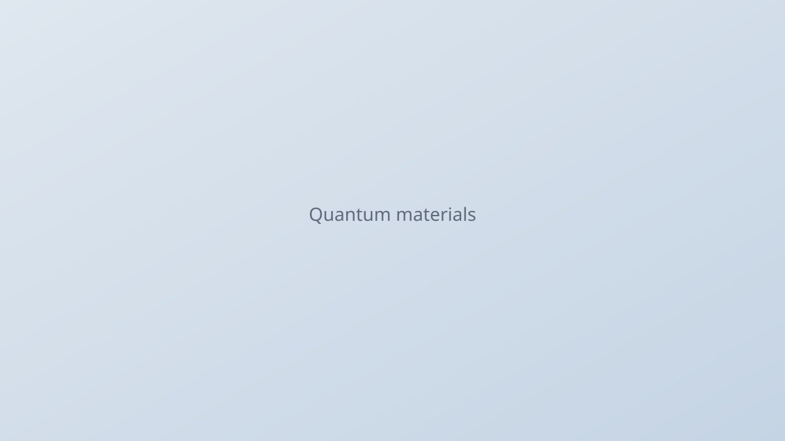

Quantum materials
A central theme of my research is the discovery and characterization of quantum materials whose electrons interact strongly enough to produce unconventional magnetism, superconductivity, and other collective phases. I work with single crystals and thin films spanning correlated metals, frustrated magnets, and topological systems, combining transport, thermodynamic, and scattering measurements to connect microscopic Hamiltonians to macroscopic behavior. Much of this work emphasizes how crystal structure, dimensionality, and chemical tuning steer competing interactions and open windows into new physics.
